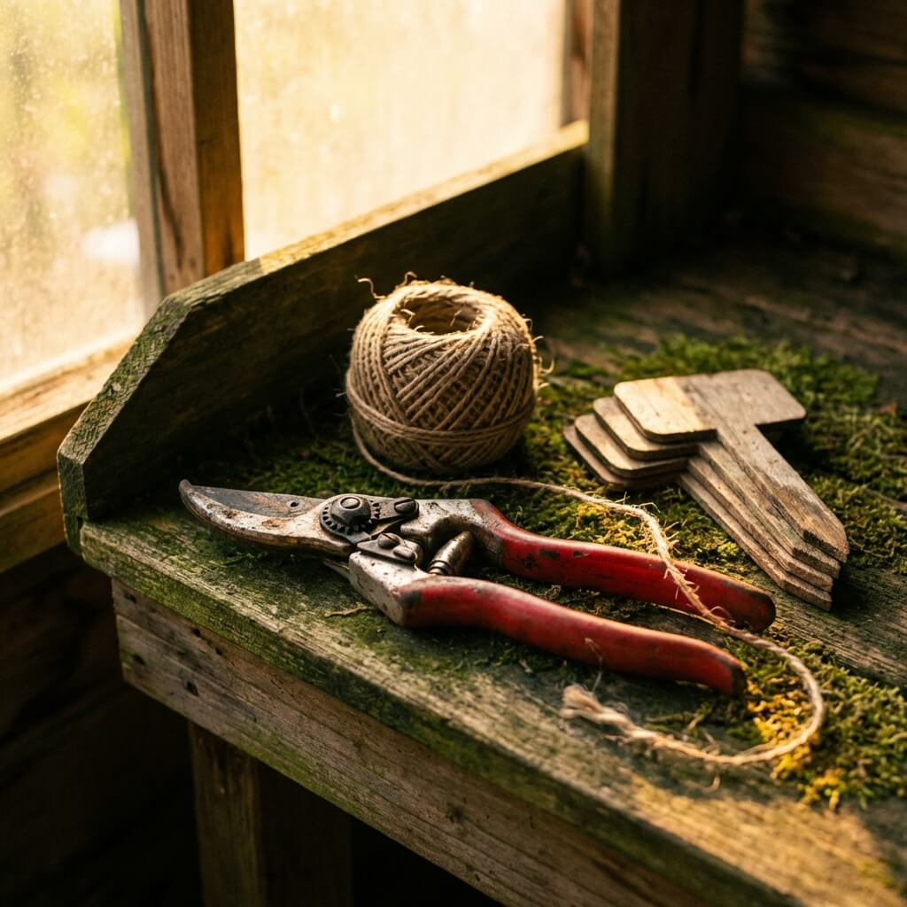

Een tuinontwerp is slechts papier, totdat iemand het tot bloei brengt.
— GROENMEESTER VOORBEELD · AMSTERDAM · SINDS 2007
Wat wij doen
Van eerste schets tot compleet beplantingsplan. Wij ontwerpen tuinen die passen bij uw wensen, de bodem en het klimaat.
U droomt het, wij tekenen het — met oog voor licht, seizoenen en gebruik.
Bestrating, beplanting, schuttingen en tuinmuren — wij leggen uw complete tuin aan. Van stadstuintje tot ruime landschapstuin.
Vakkundig, netjes en binnen de afgesproken planning.
Snoeien, maaien, onkruid verwijderen en seizoensgebonden zorg. Wij houden uw tuin het hele jaar door in topconditie.
Met een onderhoudscontract op maat hoeft u er nooit meer naar om te kijken.
Water brengt leven in uw tuin. Van een compacte vijver tot een natuurlijke zwemvijver — wij ontwerpen en bouwen het.
Inclusief filtersystemen, beplanting en langjarig onderhoud.